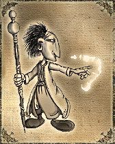
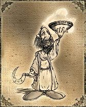
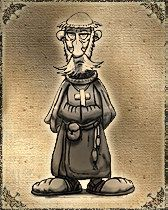
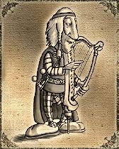
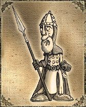
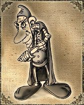
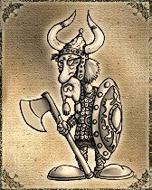
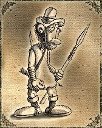
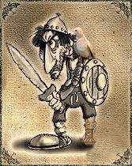

Clases del Juego
Las clases determinan en qué destaca cada personaje dentro del juego. Hay dos familias de clases, las llamadas clases de combate y las clases secundarias. Los primeros, como su nombre indica se especializan en luchar contra otros jugadores, contra personajes no jugadores, o contra criaturas hostiles. Los demás son los jugadores que crean la mayoría de los objetos que usan todos los jugadores del juegos (alimentos, ropa, armas y decoraciones). Por lo tanto, ambos tipos de jugadores son necesarios para la economía interna del mundo virtual de AO. El jugador, al iniciar la partida y crear un personaje nuevo elige la clase a la que quiere pertenecer en función de sus preferencias y expectativas de juego. Los jugadores que prefieran un juego más rápido y dinámico suelen preferir las clases de combate, mientras que los que prefieren una experiencia más compleja y rica en interacciones e intercambios, suelen elegir una de las llamadas clases secundarias.
Mago:
Es la clase por excelencia preferida por muchos de los jugadores. Si te interesan mucho los hechizos, encantamientos e invocaciones, esta clase es la indicada, ya que posee mucha maná. Pero la desventaja de esta clase es el hecho de tener poca vida como también poca evasión, lo que significa que las clases de cuerpo a cuerpo le van a acertar mucho más fácilmente los golpes.
Ventajas: Mucha maná y la mejor resistencia mágica.
Desventajas: Poca evasión y pocos puntos de vida.

Druida:
Amantes de la naturaleza, una clase que se especializa en domar criaturas y usarlas como mascotas, también usa conjuros para invocar otros tipos de criaturas que acuden a su ayuda, lo que permite que en su entrenamiento nunca esté solo. Tiene un hechizo especial que consiste en tomar la imagen de alguien o algo y transformarse, esto sirve para confundir a los enemigos, ideal para despistar en una batalla. Aunque no tiene tanta maná como el Mago, está entre las clases que más poseen.
Ventajas: Mucho poder mágico y muy buena defensa mágica.
Desventajas: Poca evasión.

Clérigo:
Sabios y fuertes, es una clase que se especializa tanto en las artes mágicas como la lucha de cuerpo a cuerpo. Aunque sus golpes no sean tan fuertes puede combinar sus dos especialidades. Así como el druida, el clérigo tiene mucho maná, pero no tanto como el Mago.
Ventajas: Buena defensa física y Mágica.
Desventajas: No realiza muchos daños.

Bardo:
Una clase muy práctica frente a las clases de cuerpo a cuerpo ya que posee una gran evasión lo que resulta difícil para el enemigo cuando intente acertarle un golpe. Sus ataques mágicos son muy poderosos, aún más cuando usa un ítem especial que le da bonificación de poder mágico.
Ventajas: mucho poder mágico y mucha evasión contra golpes.
Desventajas: Poca resistencia mágica.

Paladín:
El paladín es una clase con mucha vida y una gran fuerza, ideal para encuentro contra otra clase que lucha cuerpo a cuerpo ya que sus golpes son algo más débiles que los del guerrero. Una de las desventajas es que su maná que es muy limitada y eso dificulta sus peleas contra clases mágicas.
Ventajas: Buena Fuerza, buena defensa cuerpo a cuerpo y muchos puntos de vida.
Desventajas: Poca resistencia mágica, poco mana.

Asesino:
Sigiloso y sanguinario, la característica especial de esta clase es APUÑALAR, esto significa que de un golpe podrías dejar a tu enemigo prácticamente muerto, su evasión es la mejor y no conoce el miedo contra quienes intenten pegarle.
Ventajas: Mucha evasión, golpe asesino.
Desventajas: Poco maná.

Guerrero:
Una clase que no usa magias sino que directamente usa la fuerza y combate cuerpo a cuerpo, sus golpes resultan ser increíblemente devastadores cuando éste se encuentra en su punto más elevado, posee una gran vida pero su desventaja es que no puede usar magias, esto hace que sea una presa fácil si no está acompañado. Aunque siempre puede contar con su velocidad con el arco y la flecha.
Ventajas: Muchos puntos de vida, mucha fuerza, mucha defensa física.
Desventajas: No tiene mana.

Cazador:
Clase que no usa magia, pero que es muy hábil usando armas a distancias, tiene la habilidad de poder ocultarse entre las sombras cuando éste usa su armadura de cazador, tiene una bonificación de daño crítico para mejorar el rendimiento de su entrenamiento y esto hace que resulte fácil de entrenar. Sus fuertes ataques a distancia, hacen que cualquiera evite acercarse a él, aunque si está solo, el no tener magia le trae muchos problemas.
Ventajas: Ataque a distancia de gran poder, habilidad de ocultarse.
Desventajas: No tiene mana.

Pirata:
Reyes de los mares, los piratas aprenden a navegar más rápidamente que las demás clases de combate. Carece de maná y no son la mejor clase cuerpo-a-cuerpo, pero son indispensables en las líneas defensivas. Gracias a su galera/galeón, pueden llevar más ítems que las demás clases sociales, y proteger los tesoros enemigos bajo su manto para luego reclamarlos como suyos.
Ventajas: Amplio espacio en el inventario, al igual que vida y habilidades de navegación.
Desventajas: No tiene mana.
